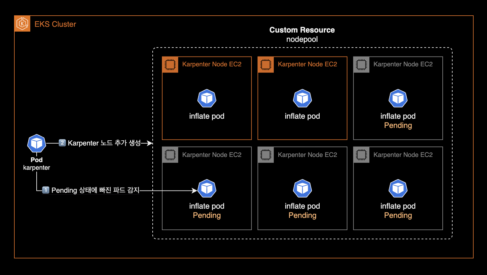
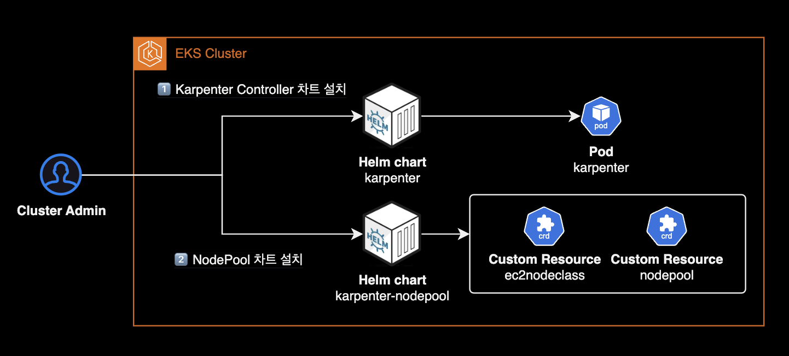

Karpenter
개요

클러스터 운영자를 위한 Karpenter 운영 가이드입니다.
이 글은 DevOps Engineer 혹은 SRE를 대상으로 작성되었으며 Karpenter에 대한 운영 방법과 몇 가지 팁이 포함되어 있습니다.
환경
- Karpenter 버전 : v0.35.4
- 설치 방식 : Helm chart
설치 가이드
Karpenter 설치에는 크게 2가지 방법이 있습니다.
- EKS Terraform Module에 포함된 Karpenter 서브모듈을 사용하는 방법
- Helm chart로 설치하는 방법
Karpenter 공식문서의 Getting Started 페이지에는 테라폼 모듈을 사용한 설치 방법은 언급되어 있지 않으며, 헬름 차트를 이용한 설치만 설명하고 있습니다.
제가 2023년 9월에 작성한 Karpenter v0.27 설치 가이드는 현재 Deprecated 된 게시글이므로 참고 정도만 해주세요.
운영 가이드
카펜터 노드 수동으로 늘리기 (Inflate)
Karpenter 노드는 ASGAuto Scaling Group를 사용하지 않는 특성으로 인해 Cluster Autoscaler와 다르게 각 노드그룹의 최소(Min), 현재(Desired), 최대(Max) 인스턴스 개수를 지정할 수 없습니다. 이것이 Karpenter와 Cluster Autoscaler의 가장 큰 차이점입니다.
기본적으로 Karpenter는 클러스터의 워크로드 요구 사항을 감지하고 적절한 시점에 노드를 자동으로 추가하거나 제거하여 리소스 사용을 최적화합니다. 그러나 특정 상황에서는 클러스터 관리자가 카펜터 노드 수를 수동으로 조절할 필요가 있을 수 있습니다.
Karpenter에서는 수동으로 노드 수를 늘리는 행위를 인플레이트inflate라고 부르며, 일반적인 방법은 임시 워크로드를 생성하여 클러스터에 리소스 요구 사항을 인위적으로 생성하는 것입니다. 이를 통해 Karpenter나 다른 자동 스케일러가 더 많은 노드를 추가하도록 유도할 수 있습니다.

인플레이트 제어를 위한 Deployment 입니다. Pause 컨테이너 이미지를 사용합니다.
KARPENTER_NODEPOOL_NAME=default
cat << EOF | kubectl apply -f -
---
apiVersion: apps/v1
kind: Deployment
metadata:
name: karpenter-inflate
spec:
# spec.replicas 값을 증가시키면, 각각의 파드가 다른 노드에 배포될 것입니다.
replicas: 1
selector:
matchLabels:
app: karpenter-inflate
template:
metadata:
labels:
app: karpenter-inflate
spec:
terminationGracePeriodSeconds: 0
containers:
- name: inflate
image: public.ecr.aws/eks-distro/kubernetes/pause:3.7
resources:
requests:
cpu: 1
affinity:
podAntiAffinity:
requiredDuringSchedulingIgnoredDuringExecution:
- labelSelector:
matchExpressions:
- key: app
operator: In
values:
- karpenter-inflate
topologyKey: "kubernetes.io/hostname"
nodeAffinity:
requiredDuringSchedulingIgnoredDuringExecution:
nodeSelectorTerms:
- matchExpressions:
- key: karpenter.sh/nodepool
operator: In
values:
- ${KARPENTER_NODEPOOL_NAME}
EOF
Kubernetes에서 nodeAffinity와 podAntiAffinity 설정은 함께 사용될 때 AND 조건으로 작동합니다. 이는 파드가 스케줄링될 때, nodeAffinity에 정의된 노드 선택 조건 그리고 podAntiAffinity에 정의된 다른 파드와의 위치 분리 조건을 동시에 만족해야 함을 의미합니다.
따라서 위 karpenter-inflate deployment를 사용하면 default 노드풀에 속하는 Karpenter Node는 spec.replicas 개수와 동일하게 늘어나게 됩니다.
아래 명령어를 통해 default nodepool에 속한 노드를 6개로 고정합니다.
kubectl scale deployment karpenter-inflate --replicas 6
karpenter controller pod 로그에서 Karpenter Node Autoscaling 과정을 실시간으로 확인할 수 있습니다.
kubectl logs -f \
-n kube-system \
-l app.kubernetes.io/name=karpenter \
-c controller
# Check the list of newly created Karpenter Nodes
kubectl get nodeclaim -o wide
Karpenter 커스텀 리소스 관리
Karpenter 팀은 Karpenter 커스텀 리소스용 헬름 차트를 공식적으로 제공하지 않으며 사용자가 직접 작성하여 사용하길 권장하고 있습니다. 저 역시 Karpenter를 도입하기 전에 관련 차트를 찾아보았지만, 많은 옵션이 없어 결국 직접 차트를 만들게 되었습니다.
Kubernetes에서는 직접적으로 YAML을 사용하여 클러스터의 리소스를 설치하고 관리하는 것을 권장하지 않는 전형적인 안티 패턴으로 여겨집니다. 따라서, YAML 파일을 직접 작성하는 대신, 저는 karpenter-nodepool 헬름 차트를 사용해 GitOps 방식으로 설치 및 관리하는 방식을 추천합니다.

이는 제가 직접 개발한 차트로, Karpenter Node 프로비저닝에 필요한 nodepool과 ec2nodeclass 리소스를 포함하고 있습니다.
노드 중단 예외처리
Karpenter Controller가 특정 Karpenter Node 또는 중요 파드가 배치된 Karpenter Node를 중단시키지 않도록 막으려면 약속된 Annotation을 붙입니다.
Pod level에서 설정
파드에 karpenter.sh/do-not-disrupt: "true" 어노테이션을 설정하여 Karpenter Controller가 특정 파드를 중단 대상으로 선택하는 것을 방지할 수 있습니다.
Karpenter disruption으로부터 예외처리 해야하는 워크로드 파드의 예시로는 중단하고 싶지 않은 실시간성 게임이나 중단된 경우 다시 시작해야 하는 긴 일괄 작업(예: 머신러닝 배치, 앱 빌드를 수행하는 Actions Runner)이 있습니다.
apiVersion: apps/v1
kind: Deployment
spec:
template:
metadata:
annotations:
karpenter.sh/do-not-disrupt: "true"
Pod의 어노테이션에 Karpenter 중단 예외처리가 정상 적용된 경우, Karpenter Node에서는 다음과 같이 Cannot disrupt Node: Pod ... has "karpenter.sh/do-not-disrupt" annotation 이벤트가 발생합니다.
kubectl describe node ip-xx-xxx-xxx-xxx.ap-northeast-2.compute.internal
Events:
Type Reason Age From Message
---- ------ ---- ---- -------
... ... ... ... ...
Normal DisruptionBlocked 33s karpenter Cannot disrupt Node: Pod "<REDACTED>/xxx-vvj6g-z598z" has "karpenter.sh/do-not-disrupt" annotation
Node level에서 설정
특정 카펜터 노드에 karpenter.sh/do-not-disrupt: "true" 주석을 설정하여 Karpenter가 특정 노드를 자발적으로 중단하지 못하도록 차단할 수 있습니다. 예외처리 Annotation이 붙은 노드는 Karpenter Controller가 수행하는 중단Disruption 작업에서 제외되므로 어떠한 경우에도 내려가지 않습니다.
특정 카펜터 노드를 중단(Disruption)으로부터 예외처리 적용 또는 해제 방법은 다음과 같습니다.
먼저 예외처리할 노드를 식별합니다.
# Karpenter가 EC2 생성할 때 만드는 nodeclam 리소스 조회
kubectl get nodeclaim -o wide
NAME TYPE ZONE NODE READY AGE CAPACITY NODEPOOL NODECLASS
default-mfnll m6i.xlarge ap-northeast-2a ip-10-xxx-xxx-x.ap-northeast-2.compute.internal True 4h55m on-demand default default
default-mlhqr m6i.xlarge ap-northeast-2c ip-10-xxx-xxx-xxx.ap-northeast-2.compute.internal True 4h57m on-demand default default
default-x2wcj m6i.xlarge ap-northeast-2a ip-10-xxx-xxx-xxx.ap-northeast-2.compute.internal True 5h3m on-demand default default
nodeclaim을 확인했으니 실제 node 리소스를 조회합니다.
# 전체 워커노드 조회
kubectl get node -o wide
예외처리용 Annotation을 해당 노드에 추가합니다.
Annotation 추가시 kubectl annotate node <NODE_NAME> 또는 kubectl edit node <NODE_NAME> 명령어 중 편한 방법을 사용하면 됩니다.
# Disruption 대상에서 제외
kubectl annotate node ip-10-xxx-xxx-xxx.ap-northeast-2.compute.internal karpenter.sh/do-not-disrupt="true"
# Disruption 대상에 포함
kubectl annotate node ip-10-xxx-xxx-xxx.ap-northeast-2.compute.internal karpenter.sh/do-not-disrupt-
kubectl get node <NODE_NAME> -o yaml 명령어로 Node 리소스의 설정을 확인해보면 karpenter.sh/do-not-disrupt: "true"가 새로 추가된 걸 확인할 수 있습니다.
apiVersion: v1
kind: Node
metadata:
annotations:
karpenter.sh/do-not-disrupt: "true"
...
finalizers:
- karpenter.sh/termination
이후 해당 Karpenter 노드에 발생한 Event 정보를 확인합니다.
kubectl describe node <NODE_NAME>
결과값 마지막에 위치한 Events 항목을 확인합니다.
...
Events:
Type Reason Age From Message
---- ------ ---- ---- -------
Normal DisruptionBlocked 14s karpenter Cannot disrupt Node: Disruption is blocked with the "karpenter.sh/do-not-disrupt" annotation
"karpenter.sh/do-not-disrupt" annotation에 의해 해당 노드는 중단 작업에서 제외된 걸 이벤트를 통해 확인할 수 있습니다.
자동화된 중단
Karpenter Controller는 Kubernetes 클러스터의 리소스 사용률과 비용 효율성을 높이기 위해 클러스터 관리자 대신 클러스터 운영 업무를 수행합니다. 이는 클러스터의 스케일링과 관리를 자동화하여, 운영자가 수동으로 인프라를 조정하는 데 드는 시간과 노력을 줄여줍니다. Karpenter는 다음과 같은 주요 중단(Disruption) 작업을 통해 클러스터를 관리합니다.
중요:
예외처리용 Annotation을 파드나 Karpenter Node에 붙이면 다음 세 가지 Karpenter Controller가 수행하는 자동화된 중단작업Automated methods에서 관련 노드가 제외됩니다.
- Consolidation (통합): 이 작업은 클러스터의 리소스 사용률을 최적화하기 위해 수행됩니다. 노드들 사이에 분산된 워크로드를 재조정하여, 사용되지 않는 노드를 축소하거나 제거함으로써 리소스를 보다 효율적으로 사용할 수 있도록 합니다. 즉, 적은 수의 노드로 같은 작업을 수행하여, 전력 소비와 비용을 절감할 수 있습니다.
- Drift (변동): 클러스터의 상태가 원하는 구성에서 벗어나게 되는 것을 ‘드리프트’라고 합니다. 이는 시간이 지남에 따라 자연스럽게 발생할 수 있는데, 예를 들어, 소프트웨어 버전의 차이나 리소스 요구사항의 변경 등이 이에 해당합니다. 드리프트 작업은 이러한 변동을 감지하고, 클러스터를 원래의 또는 최적의 상태로 복원하기 위해 노드를 자동으로 업데이트하거나 교체합니다.
- Expiration (만료): 노드에 설정된 수명이 다하거나 사용하지 않는 리소스를 제거하는 과정입니다. 특정 시간 동안 사용되지 않은 노드를 자동으로 정리함으로써, 리소스를 효율적으로 관리하고 비용을 절감할 수 있습니다. 만료 작업은 오래되거나 더 이상 필요하지 않은 노드를 식별하고 제거하여, 클러스터를 최신 상태로 유지하는 데 도움을 줍니다.
자동화된 중단 방법은 NodePool 리소스 마다 설정된 중단 예산disruption budget을 통해 속도를 제한할 수 있습니다.
apiVersion: karpenter.sh/v1beta1
kind: NodePool
metadata:
...
spec:
disruption:
budgets:
- nodes: 10%
- duration: 10m
nodes: "0"
schedule: '@daily'
...
이러한 작업은 클러스터의 효율성과 비용 효율성을 높이기 위해 중요합니다. 하지만, 특정 Karpenter Node가 이러한 작업의 대상이 되지 않도록 설정하려면, 예외 처리용 Annotation을 사용하여 해당 노드를 제외시킬 수 있습니다. 이는 해당 노드가 중요한 워크로드를 처리하거나, 특별한 구성이 필요한 경우 유용할 수 있습니다.
참고자료
EKS docs
Karpenter Best Practices
Karpenter docs
Karpenter v0.35 공식문서